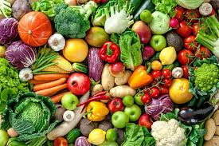
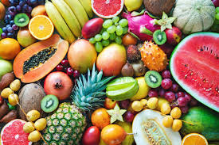
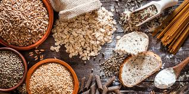

Click below to view complete A-Z cultivation guidance including soil preparation, watering methods, fertilizer management, pest control techniques, disease prevention and productivity improvement practices for farmers, nursery owners, gardeners and home growers.